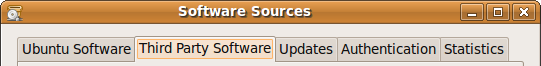

To start installing and using software from a Personal Package Archive, you first need to tell Ubuntu where to find the PPA and how to verify the authenticity of its software.
Step 1: Copy the first line from the apt sources.list entries section of the PPA overview page. For example:
deb http://ppa.launchpad.net/awn-testing/ubuntu jaunty main
Step 2: On your Ubuntu computer, open System > Administration > Software Sources.
Step 3: Click the Third Party Software tab.
Step 4: Click the Add button.
Step 5: Paste the line you copied in step 1 and click the Add Source button.
Step 6: Now copy the second line from the apt sources.list entries section of the PPA overview page and paste it in just as you did in steps 4 and 5.
When prompted, reload the software sources information. Don't worry if you see a warning about unverified software sources; we're going to fix that next.
Now Ubuntu knows about the PPA. It also needs to know how to check the software hasn't been tampered with since Launchpad built it.
Note: This is not an endorsement of any of the software in PPAs. You must make sure you trust the PPA owner before installing their software.
Step 1: On the PPA's overview page you'll see the PPA's OpenPGP key id. It'll look something like this: 1024/12345678. Copy it, or make a note of, the portion after the slash, e.g: 12345678.
Step 2: Open your terminal and enter:
sudo apt-key adv --keyserver keyserver.ubuntu.com --recv-keys 12345678
Replace 12345678 with the key id you copied in step 1.
Step 3: Finally, tell Ubuntu to re-load the details of each software archive it knows about:
sudo apt-get update
You're now ready to install software from the PPA!
Read more about Personal Package Archives in our help wiki.